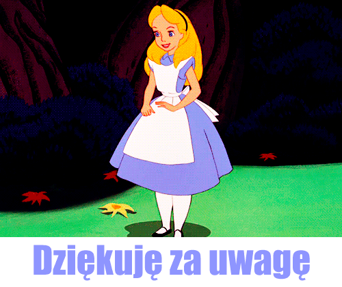

-kiedy powstała
w maju 1995 roku
-dlaczego jest to język skryptowy
Skrypty te służą najczęściej do zapewnienia interakcji poprzez reagowanie na zdarzenia, walidacji danych wprowadzanych w formularzach lub tworzenia złożonych efektów wizualnych
-gdzie jest wykonywany JS (kliet lub serwer)
tu i tu
-dlaczego jest to bezpieczne narzędzie
-czy jest to język obiektowy , jeśli tak to dlaczego.
